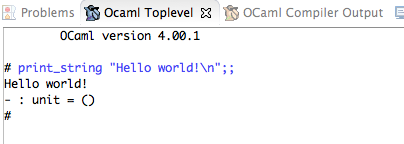
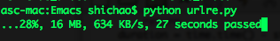

Fix Eclipse icon (not displayed, too big) in Unity Dash on Ubuntu 12.10
It seems that the regular methods of merely creating eclipse.desktop (specifying Icon path as icon.xpm in the decompressed folder of Eclipse) which applied to Ubuntu 12.04 does not work on 12.10. The problem is that the icon is too big for Dash to render.
The huge icon can be obviously seen in “Dash Home” search results and /usr/share/applications/ folder.
Someone has already reported this as a bug at https://bugs.launchpad.net/ubuntu/+source/dash/+bug/1068702 .
Found the simplest solution here.
Copy icon.xpm (from eclipse folder) into ~/.local/share/icons/eclipse4.xpm
In your eclipse.desktop file (which should be in ~/.local/share/applications instead of /usr/share/…), replace Icon=/path/to/eclipse/icon.xpm by Icon=eclipse4. You don’t need to add the .xpm suffix.
The eclipse.desktop will thus be something like this:
[Desktop Entry]
Version=1.0
Name=Eclipse
GenericName=Integrated Development Application
Comment=Eclipse Juno
Exec=/usr/local/bin/eclipse
TryExec=/usr/local/bin/eclipse
Icon=eclipse4
Terminal=false
Type=Application
Categories=Development;IDE;
Open an application with a specific language on Mac OS X
While using iTunes on Mac OS X I encounter some little different issues from those on Windows. For example, some quasi-ID3-edited MP3 files suffer Mojibake in Japanese texts. Simple built-in conversion does not render them well. Even changing the language/region setting to “Japanese” fails to fix that. However, when changing language setting to “Chinese”, everything seems back to normal.

As far as I can tell after exploration, the cause was probably importing songs containing Japanese characters on Windows (Chinese) and then transfering to Mac, because those retrieved on Mac seem alright. But this does not apply to all that has the problem; some other songs transferred from Windows remain intact.
{kind=link}
It sounds a horrible idea to re-edit all ID3 in a proper language environment, so setting iTunes to a default language may be a compromising solution. Hands-on workaround in a simple like this does not work any longer, and a new tool shows up — Language Switcher.
{kind=link}
Install and open it, choose “Chinese (China)” as the default start-up language for iTunes and relaunch the program. As you can see, ID3 are displayed properly as if having the system switched into Chinese.

UPDATE
As suggested by drivel, mid3iconv -e GBK *.mp3 command from the mutagen Python package can used to solve the problem once for all.
Hello World in OCaml with Eclipse
Assume Eclipse has been installed,
Download and install OCaml (http://caml.inria.fr/download.en.html)
Open Eclipse, Help -> Install New Software, enter “http://www.algo-prog.info/ocaide/” as repository site, and install this plugin. Restart Eclipse after finish.
Turn the current perspective into OCaml by Window -> Open Perspective.
Then, create a new project named “ocaml_hello” by New -> OCaml Project. And create a new Module named “ocaml_hello” or simply a file with .ml extension.
Write the code:
print_string "Hello world!\n";;
Press F6 (Fn+F6 on Mac) or OCaml -> Eval In Toplevel, and the console “OCaml Toplevel” at the bottom will output results.


Tricky C program question concerning software security
While the software security exam is coming, I try to review some of the facultative homework. Just post one that seems impossible to figure out for me. May some “Da Niu” try to give a solution when seeing this by chance. The code has been modified a little in case… but without changing the original intention.
#include <stdio.h>
#include <stdlib.h>
void foo(char s[]){
scanf("%s",s);
}
int main(){
char S[1];
foo(S);
exit(0);
printf("\nsomething shows up after exit");
}
The question is to find an input in order that the program will print “something shows up after exit”. What the hell is that?
Configure SML mode on Emacs for Standard ML on Mac OS X
Before start, we have to make sure the Emacs For Mac OS X has been installed, which can be retrieved at emacsformacosx.com.
Download the lastest distribution (110.75 as of posting date) of SML .dmg file from this working site, and then install it.
Download the latest Emacs Lisp package for SML mode from this site, which should be sml-mode-5.0.tar.gz at the time. Double-click the downloaded file and make it folder, and place the folder anywhere you like.
Open terminal, create a file named .emacs at your user folder. Add the following lines of Lisp in the file:
(setq load-path (cons "/path/to/sml-mode-5.0" load-path)) (load "sml-mode-startup")
/path/to/sml-mode-5.0 indicates the path to SML mode package downloaded in Step 2.
As the installation in Step 1 makes binary file of SML/NJ compiler placed at /usr/local/smlnj-110.75/bin, then you have to append the following lines into .emacs:
(setenv "PATH" (concat "/usr/local/smlnj-110.75/bin:" (getenv "PATH"))) (setq exec-path (cons "/usr/local/smlnj-110.75/bin" exec-path))
Configuration done.
Open Emacs, type M-x run-sml, a buffer should appear with “Standard ML of New Jersey” compiler info listed. You can now input and run ML code.

To edit a file in SML, create a new file using C-x C-f with .sml extension, or create a file with whatever extension and type M-x sml-mode. Then the minibuffer region will become SML rather than Fundamental, and the syntax will be highlighted.

Progress/speed indicator for urlretrieve() in Python
A simple reporthook() function for urllib.urlretrieve()‘s reporthook argument:
import sys
import time
import urllib
def reporthook(count, block_size, total_size):
global start_time
if count == 0:
start_time = time.time()
return
duration = time.time() - start_time
progress_size = int(count * block_size)
speed = int(progress_size / (1024 * duration))
percent = int(count * block_size * 100 / total_size)
sys.stdout.write("\r...%d%%, %d MB, %d KB/s, %d seconds passed" %
(percent, progress_size / (1024 * 1024), speed, duration))
sys.stdout.flush()
def save(url, filename):
urllib.urlretrieve(url, filename, reporthook)
After writing __main__ and designating url as well as filename for the sample file urlre.py, we can run it and see the effect.

UPDATE
As suggested by Naquada, to avoid thing like “106%” and so on, percent should be defined as percent = min(int(count*blockSize*100/totalSize),100).
Display desktop on iPad using Air Display over USB tethering
I was recently exploring remote desktop apps (VNC/RDP things) for iOS. Then, plenty of them show up, like iDisplay, Splashtop, PocketCloud, Air Display, Displaylink, 2x, etc (all available at App Store). These apps are able to mirror or sustain remote desktop control over computers through Wi-Fi or Bluetooth. Among them, Splashtop seems to have versatility on control and Air Display is fast in streaming.
While the idea of implementation via USB rather than Wi-Fi sounds easy, it doesn’t really work. The blog of Air Display support says: “In order for iOS apps like Air Display to access the USB bus via the 30-pin dock connector, its developer must be part of Apple’s Made for iPod/iPhone/iPad (MFi) program”. Nevertheless, they propose another solution, USB tethering.
According to this nifty workaround (for Mac, but same for Windows), what we need is a jailbroken iOS device, then download and install MyWi 5 from Cydia on it. When turning on Air Display on both iOS and Windows, enable USB tethering using MyWi. With the network established, the Air Display on Windows will recognize the device. Then, by clicking on the option for this device, the mirror or remote desktop just work. The trial takes place under the same wireless LAN.
推荐两个用于往国内翻的VPN
非凡VPN（vpn123）和91vpn（n个代理网站，官网貌似木有域名是个ip地址）
还没有使用，初步查了一下。
共同的特点就是标题所示的，他们都有国内节点，适用于在国外的同学使用，用于访问国内的一些视频网站、CNTV以及其他用处（据说国外IP无法使用U盾之类验证的国内网上银行）。
前者做的比较实在，windows客户端界面比较好，支持PPTP、L2TP和OpenVPN，购买后可以查看服务器列表，因此可以比较方便的配置iPad/iPhone/Android，Windows 7下也可以通过配置VPN连接。而且提供测试账号。刚刚测试了一下美国测试节点，还可以，看youtube标清视频还算流畅。
后者貌似用的人更多，代理商也多，淘宝上就好多。支持PPTP、L2TP。声称全球3000多台服务器，但貌似不公布服务器列表（当然肯定有办法获得），网站上只说明了windows客户端的使用。
代码行统计工具 CLOC
Count Lines of Code (CLOC): http://cloc.sourceforge.net/
下载 Perl 脚本 cloc-1.56.pl 即可使用。
$ perl cloc-1.56.pl /var/local/pywikipedia/
290 text files.
273 unique files.
42 files ignored.
http://cloc.sourceforge.net v 1.56 T=2.0 s (124.5 files/s, 50462.5 lines/s)
--------------------------------------------------------------------------------
Language files blank comment code
--------------------------------------------------------------------------------
Python 245 9139 18658 72906
XML 2 16 0 194
Bourne Again Shell 1 0 5 6
Bourne Shell 1 0 0 1
--------------------------------------------------------------------------------
SUM: 249 9155 18663 73107
--------------------------------------------------------------------------------
Python正则表达式转义匹配
由于学校的某个学生社团管理机构总是 DT 地不断更改并发布社团的分类和编号的版本，致使 wiki 站上的资料无法保证其内容的最新状态。今天，实在看不下去了，决定更新这80个社团的资料。
前几天已经利用空闲做好了新版社团分类的 wiki 表格文本（那个机构在其网站上连文字都懒得发布，直接发布的文档截图，害的我敲了100多行 wiki markup），今天提交到 MediaWiki 中。然后，还需要更新社团条目的导航模板，就必须将 wiki markup 中的社团名称外带其“[[ ]]”标记一起取出。手动取出的话需要选择-复制-粘贴80多次，并且还要做很多后续处理工作。于是决定写 python 用正则来处理。
使用 re.compile 和 findall 已经匹配出了类似于这样的内容：
|A1001||[[北京科技大学电子竞技协会|电子竞技协会]]||
想在进行二次findall出“[[北京科技大学电子竞技协会|电子竞技协会]]”时，发现对“[”转义出现了问题。于是，上网查资料，发现了一篇文章 http://bbs.scmroad.com/viewthread.php?tid=21963 。
明白了用法之后，使用“[[^]]+]]”进行匹配，成功findall “[[北京科技大学电子竞技协会|电子竞技协会]]”。然后 join 成字符串，print后提交至编辑页面之中。